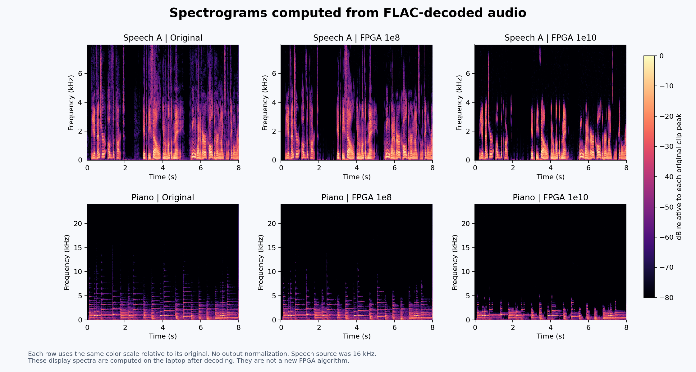

Methods and measured results | Credits and licenses
Keep playback volume fixed. A quieter background can also mean lost detail. These are archived samples, not a live connection to the FPGA.
All four versions use the same playback gain. Threshold 0 already includes signed 12-bit input quantization. FLAC decodes exactly to the waveform provided to its encoder.

The following processed clips are fixed-point software-reference outputs. They are not board captures. All show the same preselected condition with synthetic hiss at 5 dB input SNR. Speech uses threshold 10^10 and music uses 3 x 10^9.
The Age of Chivalry / Chapter 18: Perceval / Read by Anders Lankford From the LibriSpeech SLR12 collection: https://www.openslr.org/12/ CC-BY 4.0 https://creativecommons.org/licenses/by/4.0/
Sense and Sensibility / Chapter 18 / Jane Austen / Read by Heather Barnett From the LibriSpeech SLR12 collection: https://www.openslr.org/12/ CC-BY 4.0 https://creativecommons.org/licenses/by/4.0/
Pistachio Ice Cream Ragtime by The Piano Lady (Lena Orsa) https://freesound.org/people/lena_orsa/sounds/442789/ CC-BY NC 3.0: https://creativecommons.org/licenses/by-nc/3.0/
Vibe Ace by Kevin MacLeod is licensed under a Creative Commons Attribution License. From the Free Music Archive: https://freemusicarchive.org/music/Kevin_MacLeod/Jazz_Sampler/Vibe_Ace CC-BY https://creativecommons.org/licenses/by/3.0/
Recordings were excerpted, resampled, level adjusted, quantized and processed as described in the methods. Denoising derivatives also contain synthetic noise. Piano media is CC BY-NC 3.0. The audio is not relicensed under the software license.